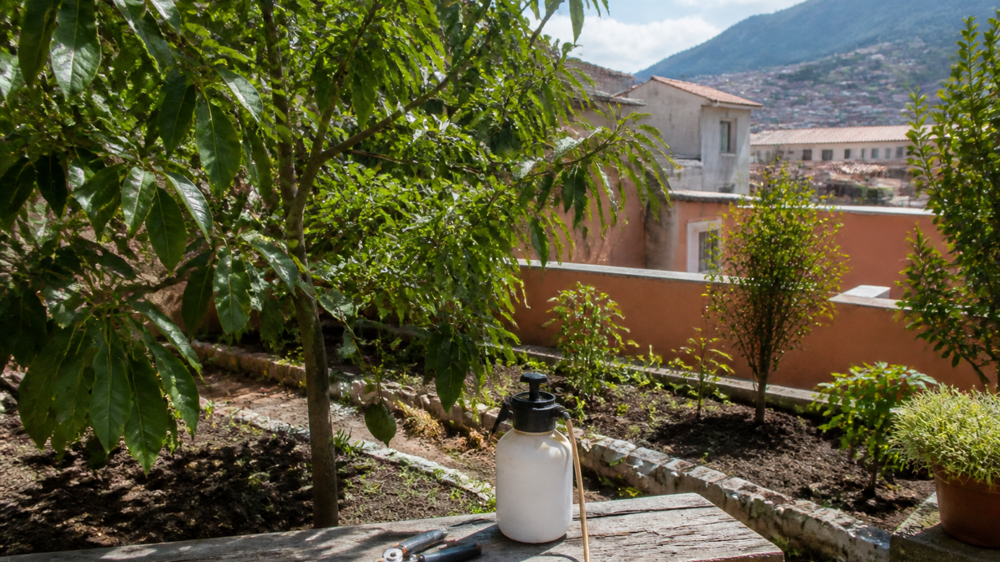

Poda
Poda de frutales y plantas urbanas para ordenar el crecimiento y facilitar el cuidado.
Consultar ↗
Asesoría agrícola urbana · Quito
Poda, fumigaciones de frutales y fertilización, con una mirada de asesoría agrícola urbana en Quito.
01 / Servicios
Trabajamos la asesoría agrícola urbana desde lo que el árbol o el cultivo necesita ahora.
Poda de frutales y plantas urbanas para ordenar el crecimiento y facilitar el cuidado.
Consultar ↗Fumigación de frutales urbanos cuando hay que atender plagas o prevenir daños.
Consultar ↗Fertilización para sostener el cultivo y acompañar el desarrollo de las plantas.
Consultar ↗Orientación para el cuidado de huertos y frutales en la ciudad.
Consultar ↗02 / Cómo trabajamos
Una forma de trabajar pensada para resolver con claridad.
Escríbenos por WhatsApp y cuéntanos qué necesita tu huerto o tus frutales.
Entendemos la situación para orientarte mejor.
Definimos juntos cómo seguir con la poda, la fumigación o la fertilización.
03 / Zona
04 / Contacto
Escribe ahora y recibe una orientación inicial para coordinar.
Hablemos por WhatsApp ↗